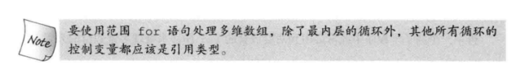
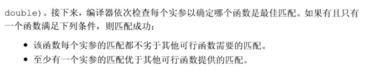

《C++ Primer》 1-7章笔记
第一章
标准库定义的4个IO对象：cin cout cerr clog
输入输出运算符返回其左侧运算对象作为其计数结果
UNIX系统中，文件结束符输入使用ctrl+D
保持代码格式的一致性
使用文件重定向：$addItem <inFile > outFile 该命令从inFile文件中读取，并将输出结果写入outFile中
第二章
基本内置类型
C++定义了一套算术类型和空类型在内的基本数据类型
C++语言规定一个int至少和一个short一样大，一个long至少和一个int一样大，一个long long(C++11)至少和一个long一样大
一个字节要至少能容纳机器基本字符集中的字符
字符型被分为了char,signed char,unsigned char,需要注意类型char和类型signed char并不一样，类型char会表现为signed char或unsigned char的一种，具体是哪种由编译器决定
在算术表达式中不要使用char或bool。因为char在不同机器上是有符号的或者无符号的。
执行浮点数运算选用double，因为float通常精度不够且双精度浮点数和单精度的计算代价相差无几
赋给无符号类型一个超出它表示范围的值时，结果是初始值对无符号类型表示数值总数取模后的余数。e.g. 8bit unsigned char表示0-255，如果赋值-1所得结果为255（-1%256）
整数商c=a/b 计算模或者取余 r = a - c*b
当a和b符号一致时，求模运算和求余运算所得的c的值一致，因此结果一致。
当符号不一致时，求模运算结果的符号和b一致，求余运算结果的符号和a一致。
取模和取余区别在于，取模运算在取c的值时向无穷小方向舍入（-1/5=-0.2向无穷小方向取整得-1）；取余运算在取c的值的时候向0方向舍入(-1/5=-0.2向0取整得到0)，第二步是相同的。
所以取模时计算机向无穷小方向舍入，即c=-1，r=(-1)-(-1)*256=255;
-1转unsigned
int类型原码表示为1000 0000 0000 0000 0000 0000 0000 0001
但在int类型在内存中的存储为补码（负数补码除符号位原码取反+1）
所以其在内存中表示为1111 1111 1111 1111 1111 1111 1111 1110+1
但unsigned类型认为是正数，所以其补码存储与原码相同
也就是2^32-1
所以强转为unsigned之后值为2^32-1
切勿混用带符号类型和无符号类型
如果反斜线后面跟着的八进制数字超过3个，只有前三个数字与之构成转义序列，而十六进制的。
变量
初始化和赋值是两个完全不同的操作，初始化的含义是创建变量时赋予其一个初始值，赋值的含义是把对象当前值擦除以一个新值代替。
列表初始化：C++11，用花括号初始化变量。如果使用列表初始化切初始值存在丢失信息的风险，则编译器将报错
1 | long double ld = 1.1415926536; |
变量定义与声明的关系
C++分离式编译，允许程序分割为若干文件，每个文件可被独立编译。
声明使得名字为程序所知，定义负责创建与名字关联的实体
如果要 声明一个变量而非定义它，就在变量名前加extern关键字
任何包含了显式初始化的声明即成为定义
1 | extern int i;//声明i但不定义 |
在函数体内部，如果试图初始化一个由extern标记的变量，将引发错误。
变量只能被定义一次，但可以被多次声明。
如果要在多个文件中使用同一个变量，就必须将声明和定义分离。此时，变量的定义必须且只能出现在一个文件中。
作用域
一旦声明之后，全局作用域内的名字在整个程序范围内都可使用。
覆盖规则
复合类型
引用
引用为对象起了另外一个名字。引用必须被初始化
1 | int ival = 42; |
定义引用时，程序把引用和它的初始值绑定在一起，而不是拷贝给引用，所以，定义了一个引用之后，对其进行的所有操作都是在与之绑定的对象上进行的。
引用不是一个对象，所以不能定义引用的引用。
一句定义多个引用时，每个引用标识符都必须以&开头
1 | int i = 1,i2=22; |
引用不能绑定在字面值或者表达式计算结果上
1 | int &refVal = 10;//wrong |
指针
指针本身就是一个对象，允许赋值和拷贝
取地址符& 解引用符*
使用nullptr初始化得到空指针（C++11)
NULL预处理变量，在cstdlib中定义，值为0
新标准下，最好使用nullptr，尽量避免使用NULL
把int变量直接赋给指针是错误的操作
如果两个指针存放的地址值相同则它们相等
void*指针可以存放任意对象的地址，但并不了解对象的类型
指向指针的引用
1 | int i = 42; |
要理解r的类型，最简单的方法是从右向左阅读r的定义，离变量名最近的符号对变量类型有最直接的影响
const限定符
必须初始化
默认状态下，const对象仅在文件内有效
定义一个常量之后，编译器在编译过程中把所有用到该常量的地方都替换成对应值。
文件之间共享：extern关键字，只需要定义一次
const的引用
指把引用绑定到const对象上
对常量的引用与普通引用的区别在于不能修改其所绑定的对象
所以也不能通过一个非常量引用去指向一个常量对象，因为非常量引用理论上是可以被修改的，二者相矛盾
1 | const int ci = 1024; |
引用的类型必须与其所引用对象的类型一致，但例外1：初始化常量引用时允许使用任意表达式作为初始值，只要表达式结果能转换成引用的类型。
1 | int i = 42; |
理解
double dval = 3.14; const int &ri = dval;
编译器为了确保让ri绑定一个整数，把上述代码变为：
const int tmp = dval; const int &ri = tmp;
所以绑定的是一个临时量，由于对const的引用不会改变值，所以是合法的
但如果ri不是常量，上述过程如果可以执行的话，改变ri相当于改变了绑定的临时量，而使用绑定肯定是想改变dval的值，所以这种方法不能达到目的，C++也就将这种行为归为非法
常量引用仅对可参与的操作进行了限定，对引用的对象本身是否是常量未作限定
1 | int i = 42; |
个人理解：常量引用只是在引用上加const限定，被绑定对象本身是否为const类型均可，但无论何种情况都不能通过引用对被绑定对象进行修改。更多的可能还是用于参数传递时保证参数不被修改。
指针和const
指向常量的指针不能用于改变其所指1对象的值。要想存放常量对象地址，只能使用指向常量的指针
1 | const double pi = 3.14; |
同理于常量引用，上述例子中pi是非常量也是可以的。
const指针
指针与引用不同的地方在于，指针是对象，所以允许把指针本身设定为常量。常量指针必须初始化。
1 | int errNumb = 0; |
从右向左理解最后一行：pip是变量名，const说明pip是一个常量，*说明pip是一个常量指针，const double说明pip指向一个双精度浮点常量
理解：
int errNumb = 0; int *const curErr = &errNumb;
这个例子中，用errNumb = 3;或者*curErr = 15;这样的方法去修改值是合法的，这完全取决于被指向的变量类型是否为const。常量指针的意义在于其指向的地址是不可以修改的
顶层const
顶层const对任意类型适用，表示修饰对象本身是个常量，底层const表示指针或引用所指的对象是一个常量
底层const的限制不能忽视，当执行对象拷贝操作时，拷入和拷出的对象必须具有相同的底层const资格，或者两个对象数据类型必须能够转换。
1 | int i = 0; |
constexpr
值不会改变且编译过程能得到结果的表达式
一个表达式是否是常量表达式由其数据类型和初始值共同决定
1 | const int maxFiles = 20; |
声明为constexpr类型以便由编译器验证变量的值是否是常量表达式（cpp11）
一般来说，如果认定变量是一个常量表达式，就声明成constexpr类型
如果在constexpr声明中定义了一个指针，则constexpr限定符仅对指针有效，与其所指的对象无关
1 | const int *p = nullptr;//p是指向整型常量的指针 |
处理类型
typedef
using wages = double;(C++11)
pstring是char,const pstring修饰的是pstring，所以等同于 char const
const pstring cstr = 0与pstring const cstr=0是一样的意思
const char* 和char const *没有区别，const出现在base type旁边修饰的就是base type，与左右无关。
auto(cpp11)
让编译器去分析表达式所属的类型
使用auto在一条语句声明多个变量时，一条语句中变量的初始基本数据类型必须一样
1 | auto i = 0, *p = &i; |
使用引用时auto的类型是引用对象的类型
1 | int i = 0,&r = i; |
auto一般会忽略顶层const
1 | const int ci = i,&cr = ci; |
使用const auto明确指出推断出的类型是一个顶层const
decltype(c++11)
作用是选择并返回操作数的数据类型，但在此过程中编译器不实际计算表达式的值
1 | decltype(f()) sum = x; |
decltype返回的类型包括顶层const和引用在内
1 | const int ci = 0，&cj = ci; |
如果decltype使用的表达式不是变量，则decltype返回表达式结果对应的类型
有些表达式将向decltype返回一个引用类型，意味着该表达式的结果对象能作为一条赋值语句的左值
1 | decltype(*p) c; |
解引用返回一个左值，该语句中c的类型为int&
当程序员使用 decltype(exp) 获取类型时，编译器将根据以下三条规则得出结果：
- 如果 exp 是一个不被括号
( )包围的表达式，或者是一个类成员访问表达式，或者是一个单独的变量，那么 decltype(exp) 的类型就和 exp 一致，这是最普遍最常见的情况。- 如果 exp 是函数调用，那么 decltype(exp) 的类型就和函数返回值的类型一致。
- 如果 exp 是一个左值，或者被括号
( )包围，那么 decltype(exp) 的类型就是 exp 的引用；假设 exp 的类型为 T，那么 decltype(exp) 的类型就是 T&。声明为返回（到对象的）左值引用/右值引用/对象的函数，用于函数调用表达式中时，形成的表达式值类别分别是左值/亡值/纯右值。然后 decltype 对该表达式的结果，还原了函数的返回类型。（https://www.zhihu.com/question/279641558）
自定义数据结构
C++11规定可以为数据成员提供一个类内初始值，创建对象时没有初始值的成员将被默认初始化
第三章
命名空间的using声明
1 | //using namspace::name |
每个名字都要独立的using语句声明
头文件不应该包含using声明，因为头文件的内容会拷贝到所有引用它的文件中，导致所有的文件中都会有声明，可能产生冲突。
标准库类型string
可变长字符序列
1 | string s4(n'c');//连续n个字符c组成的串 |
使用=执行的是拷贝初始化，否则执行的是直接初始化
string对象上的操作
读取操作时会自动忽略开头空格、换行、制表等并从第一个真正的字符开始读入，直到下一处空白为止。
size函数返回string::size_type类型的值，该类型与机器无关，是一个无符号类型的值
如果一条表达式中已经有了size()就不要再混用int了
string的比较规则：
- 如果两个string长度不同且较短的string每个字符都与较长的string对应位置的字符相同，则较短的string小于较长的
- 一般比较的结果是string对象中第一对相异字符比较的结果。
使用加法时必须确保每个加号两侧对象至少有一个是string(不可均为字符字面值或字符串字面值)
为了与C兼容，CPP的字符串字面值不是标准库类型string的对象
处理string对象中的字符
范围for处理
1 | for(auto& c : str){ |
下标迭代处理
1 | for(auto idx = 0;idx!=str.size();idx++){ |
标准库类型vector
vector是一个类模板（不是类型），编译器根据类模板创建类的过程称为实例化。
初始化vector对象
1 | vector<string> v7{10};//10个默认初始化元素 |
v7，v8提供的值不能作为元素初始值，编译器在确认无法执行列表初始化后，会尝试使用默认值初始化vector对象
向vector对象中添加元素
其他vector操作
使用size_type需要首先指定它是由那种类型定义的
1 | vector<int>::size_type//y |
迭代器
end成员负责返回指向容器尾元素的下一位置的迭代器
如果容器为空，begin和end返回的都是尾迭代器
使用!=和迭代器判断而非下标：因为这种风格在标准库提供的所有容器上都有效
所有的标准库容器的迭代器都定义了==和!=,但大多数没有定义小于运算符
begin和end具体的返回类型由对象是否是常量决定，如果对象是常量，返回const_iterator，否则返回iterator
cbegin和cend一定返回const_iterator
箭头运算符把解引用和成员访问两个操作结合在一起
1 | (*it).empty(); |
凡是使用了迭代器的循环体，都不要向迭代器所属的容器添加元素（9.3.6）
迭代器运算
两个迭代器相减得到的是其距离，即右侧迭代器向前移动多少位置能追上左侧的，其类型为difference_type的带符号整数，即距离可正可负。
数组
数组大小确定不变，所以对某些特殊的应用程序而言运行时性能较好，但损失了灵活性
声明数组时其大小必须是一个常量表达式
列表初始化时：
- 没有指明维度，编译器根据初始值数量推测
- 指明维度，初始值总数量不应超出维度；如果小于维度，则其他的会被设置为默认值
字符数组注意留出空字符的空间
1 | const char a[6] = "daniel";//wrong |
数组不能拷贝和赋值（某些编译器扩展可以）
1 | int *ptrs[10];//含有10个指针的数组 |
[]image-20230412102638060.png)
指针和数组
大多数表达式中对数组对象的使用其实是使用一个指向首元素的指针
decltype对数组使用结果依然是数组
1 | int a[10]={...}; |
end和begin函数分别以数组作为参数，返回指向尾元素下一位置和首元素的指针（C++11）
两个指针也可以相减，返回类型为ptrdiff_t,带符号机器相关类型
两个指针也可以< !=等运算，类似于迭代器
1 | int *p = &ia[2]; |
数组初始化vector对象：
1 | vector<int> avec(begin(a),end(a)); |
多维数组

第四章
基础
基本概念
一元运算符 二元运算符 三元运算符
左值和右值：
左值可以位于赋值语句左侧，右值则不能（C）
当一个对象被用作左值，用的是对象的身份（在内存中的位置）；被用作右值时，用的是对象的值（CPP）
重要原则：需要右值的地方可以用左值代替，但不能把右值当作左值使用
几种情况：
- 赋值运算符需要一个非常量左值作为左侧运算对象，结果仍然是一个左值
- 取地址符作用于一个左值运算对象，返回指向该运算对象的指针，该指针是右值（？用的是指针的内容，也即运算对象的地址）
- 内置解引用运算符、下标运算符、迭代器解引用运算符、string/vector下标运算符求值结果为左值
- 内置类型和迭代器递增递减运算符作用于左值运算对象，其前置版本所得结果也是左值
求值顺序
&& || ?: ,四种运算符只有当左侧条件成立才继续求右侧对象的值
算术运算符
算术运算符的运算对象和求值结果都是右值
除了-m导致溢出的情况，其他时候(-m)/n=m/(-n)=-(m/n)；m%(-n)=m%n,(-m)%n=-(m%n)
当m和m符号一致时，求模运算和求余运算所得的值一致，因此结果一致。
当符号不一致时，求模运算结果的符号和n一致，求余运算结果的符号和m一致。
逻辑和关系运算符
逻辑和关系运算符的运算对象和求值结果都是右值
赋值运算符
赋值运算符左侧运算对象必须是可修改的左值，运算结果也是左侧运算对象，并且是一个左值
赋值运算符满足右结合律
1 | ival = jval = 0; |
赋值运算符优先级相对较低，通常需要给赋值部分加上括号使其符合原意
递增递减运算符
前置版本：先将对象+-1，改变后的对象作为求值结果
后置版本：将对象+-1，但求值结果是改变之前的值的副本
除非必须，否则不用后置版本（后置版本会进行原始值的储存。如果不需要修改前的值会造成浪费）
条件运算符
当条件运算符的两个表达式都是左值或者能转换为同一种左值类型时，运算结果为左值；否则结果为右值
条件运算符优先级非常低
位运算符
强烈建议位运算符只对无符号类型处理
e.g. 右移之后高位会插入符号位副本或者值为0的二进制位，视具体环境而定
sizeof运算符
1 | sizeof (type);// |
第二章返回表达式结果类型的大小，并不实际计算运算对象的值。
sizeof返回值是一个常量表达式
对数组执行sizeof得到整个数组所占空间大小，等价于对数组中所有元素sizeof运算并求和
对string或vector运算只返回该类型固定部分的大小，不会计算对象中元素占用了多少空间
类型转换
隐式转换发生：
- 大多数表达式中，比int小的整型值会提升为较大整数类型
- 初始化过程中初始值转换为变量的类型
- ......
算术转换
如果带符号类型和无符号类型共存，且无符号类型不小于带符号类型，则带符号转换为无符号
显式转换
尽量避免使用强制类型转换！
命名的强制类型转换：
1 | cast-name<type>(expr); |
static_cast
任何明确定义的类型转换，只要不包含底层const，都可以使用
1 | double slope = static_cast<double>(i)/j; |
场景：较大算术类型赋值给较小的，执行显示转换后不会发出警告信息；对编译器无法自动执行的类型转换也非常有用
1 | void* p = &d; |
const_cast
只能改变运算对象底层const
1 | const char *pc; |
如果pc指向的char不是常量，那么转换获得写权限是合法行为，否则会产生未定义的后果
reinterpret_cast
从位模式上重新解释运算对象，依赖于机器，非常危险
旧式强制类型转换执行与之相似的功能
dynamic_cast
第五章
简单语句
空语句：语法上需要但逻辑上不需要时使用
复合语句：语法上需要一条语句但逻辑上需要多条语句时使用
条件语句
switch语句的case标签必须是整型常量表达式
switch的控制流：如果某个case标签匹配成功，将从该标签开始往后顺序执行所有case分支，除非程序显式break这一过程
迭代语句
C++11 范围for语句
1 | for(auto &r:v){} |
范围for语句不能递增vector的对象，因为存储了end()的值，改变vec序列的元素数量后end函数的值可能无效
跳转语句
try语句块和异常处理
异常检测部分使用throw表达式引发异常
异常处理部分使用try语句块处理异常
throw
1 | throw expr; |
try
1 | try{ |
找不到匹配的catch子句，程序将会转到terminate标准库函数，一般执行该函数将导致程序非正常退出
对于没有try语句块的异常也按照类似方式处理。
异常发生后确保对象有效、资源无泄漏、程序处于合理状态等非常困难但重要
第六章
基础
函数调用完成两项工作：
- 用实参初始化函数对应的形参
- 控制权转给被调用函数，主调函数的执行暂时中断
形参和实参存在对应关系，但没有规定实参的求值顺序
作用域和生命周期：
- 名字的作用域是程序文本的一部分，名字在其中可见
- 对象的生命周期是程序执行过程中该对象存在的一段时间
自动对象：只存在于块执行期间的对象
形参是一种自动对象，开始时为其申请存储空间，函数终止形参也被销毁
局部静态对象：将局部变量定义为static类型可以获得，在程序执行路径第一次经过对象定义语句时初始化，直到程序终止才被销毁。
函数声明、函数原型：返回类型、函数名、形参类型描述函数接口
头文件声明，源文件定义
参数传递
值传递：
初始值被拷贝，对形参改动不会影响实参
指针形参时，可以通过解引用改变所指对象的值，但实参指针本身内容（指向的地址）不会发生改变
引用传递：
相当于实参别名，对形参的修改会影响实参
使用引用传递无需拷贝，如果不需要修改可以声明为常量引用
const形参和实参：
实参初始化形参时会忽略顶层const，即可以用非常量对象去初始化常量形参
尽量使用常量引用
数组形参：
数组无法被拷贝，所以无法以值传递方式使用数组参数；为函数传递一个数组时，实际上传递的是指向数组首元素的指针。
1 | void print(const int*); |
应该提供额外信息确定数组确切尺寸：
- 包含结束标记（C风格字符串）
1 | void print(const char* cp){ |
- 使用标准库规范
传递首元素和尾后元素指针
1 | void print(const int* beg,const int* end){ |
- 显式传递数组大小形参
形参也可以是数组的引用
1 | void print(int (&arr)[10]){}//维度10也是类型的一部分，传实参是要是含有10个整数的数组 |
传递多维数组
1 | void print(int (*matrix)[10],int rowSize); |
仍然强调括号和维度必不可少，10为第二个维度，编译器会忽略第一个维度
含有可变形参的函数
如果所有实参类型相同，可以传递名为initializer_list的标准库类型（CPP11）
1 | void error_msg(initializer_list<string> il){ |
initializer_list中的对象永远是常量值，无法改变其值
在使用initializer_list时也可以同时拥有其他形参
省略符形参：
为了便于C++程序访问某些特殊的C代码，这些代码使用了varargs C标准库功能。不应用于其他目的
仅用于C和C++通用的类型
只能出现在形参列表最后一个位置
1 | void foo(...); |
返回类型和return语句
不要返回局部对象的引用或指针
函数得到返回类型决定函数调用是否是左值，调用一个返回引用的函数得到左值，其他返回类型得到右值
如果返回常量引用，则不能给调用的结果赋值
返回数组指针：
1 | int (*func(int i))[10];//必须指出数组的维度且跟在函数名之后 |
函数重载（overload）
同一作用域内名字相同但形参列表不同的若干函数
不允许两个函数除了返回类型外其他要素都相同
由于顶层const不影响传入函数的对象，仅改变参数的顶层const不构成重载，但型参数指针或者引用，改变底层const区分指向的是常量对象还是非常量对象构成重载。
1 | Record lookup(Account&); |
const_cast和重载
1 | const string &shorterString(const string& s1,const string &s2); |
调用重载函数
三种结果：
- 找到与实参最佳匹配的函数，并生成调用该函数的代码
- 找不到任何一个函数与调用的实参匹配，编译器发出无匹配错误信息
- 有多于一个函数可以匹配，但都不是最佳选择，二义性调用
重载和作用域
C++中名字查找发生在类型检查之前：局部作用域中声明的变量或函数与外层变量或函数重名时，编译器寻找到局部声明后，会忽略掉外层作用域中所有同名实体。之后才会检查调用函数是否有效。
特殊用途语言特性
默认实参
可以为一个或多个形参定义默认值，但一旦某个形参被赋予默认值，它后面的所有形参都必须有默认值
函数调用时实参按照位置解析，默认实参则负责填补函数调用缺少的尾部实参
多次声明同一个函数，在给定的作用域中一个形参只能被赋予一次默认实参，也即后续的声明都只能为之前没有默认值的形参添加默认实参，而且该形参右侧所有形参都必须有默认值
1 | string screen(sz,sz,char=' '); |
局部变量不能作为默认实参
内联函数
将操作封装成函数可读性更好，可重复利用，修改更方便，但函数调用也会增加时间开销
将函数指定为内联函数，可避免函数调用的开销，将函数在每个调用点上“内联地”展开
内联说明只是向编译器发出的请求，编译器可以忽略该请求
内联机制一般用于优化规模较小、流程直接、调用频繁的函数，很多编译器都不支持内联递归函数。
constexpr函数
指能用于常量表达式的函数
定义时的要求：
- 函数返回类型和所有形参类型都得是字面值类型
- 函数体中必须有且只有一条return语句
1 | constexpr int new_sz(){return 42;} |
执行该初始化时，编译器把调用替换为结果值，且为了能在编译过程中随时展开，constexpr函数被隐式指定为内联函数。
constexpr函数返回值可以为非常量
内联函数和constexpr函数通常定义在头文件内，因为编译器要展开函数不仅要声明还需要定义，且两类函数可能在程序中定义不止一次，此时必须保证在所有源文件中定义完全相同，放在头文件中可以确保这一点。
调试帮助
程序包含一些用于调试的代码，只在开发时使用，程序准备发布时，先屏蔽掉调试代码。该方法用到两项预处理功能
assert预处理宏
cassert头文件
assert(expr);
如果expr为0，输出信息终止执行；expr为真，什么也不做
常用于检查不能发生的条件
NDEBUG预处理变量
1 | void print(size_t sz){ |
- _ _FILE_ _存放文件名的字符串字面值
- _ _LINE_ _存放当前行号的整型字面值
- _ _TIME_ _存放文件编译时间的字符串字面值
- _ _DATE_ _存放文件编译日期的字符串字面值
函数匹配
- 选定候选函数：与被调用函数同名，声明在调用点可见
- 选出可行函数：形参数量与调用实参数量相等，实参类型与对应形参类型相同且能转换
- 寻找最佳匹配（如果有）：实参和形参类型最接近的

最接近的定义（排序）：
- 精确匹配：实参形参类型相同；实参从数组类型或函数类型转换为对应指针类型；实参添加或删除顶层const
- const转换实现匹配
- 类型提升实现的匹配
- 算术类型转换或指针转换实现的匹配（所有算术类型转换的级别都一样）
- 类类型转换实现的匹配
函数指针
声明一个指向函数的指针，只需要用指针替换函数名即可。
1 | bool (*pf)(const string&,const string&); |
重载函数的指针：
使用重载函数时，上下文必须清晰界定到底选用哪个函数
1 | void ff(int*); |
编译器通过指针类型决定选用哪个函数，必须与重载函数中的一个精准匹配
函数指针形参：
1 | void useBigger(const string& s1,const string& s2,bool (*pf)(const string&,const string&)); |
使用typedef或declype定义别名简化
返回指向函数的指针
1 | using F = int(int*,int*); |
第七章
类的基本思想：数据抽象、封装
数据抽象依赖于接口和实现分离的技术
定义在类内部的函数是隐式的inline函数
**this的类型默认情况下是指向类类型的非常量版本的常量指针T *const**
将const关键字放在成员函数的参数列表之后，表示this是一个指向常量的指针（const T *const)，有助于提高函数的灵活性
常量对象、常量对象的引用或指针都只能调用常量成员函数
构造函数：
构造函数不能被声明成const,当创建类的一个const对象时，直到构造函数完成初始化过程，对象才能真正取得其常量属性，因此在const对象构造过程中构造函数可以向其写值。
默认构造函数：如果存在类内初始值，用它来初始化成语；否则默认初始化该成员。
只有当类没有声明任何构造函数时，编译器才会自动生成默认构造函数
如果需要默认行为，可以在参数列表后面加上=default要求编译器生成构造函数（CPP11）
构造函数初始值列表
1 | Sales_date(const string& s,unsigned n,double p):bookNo(s),units_sold(n),revenue(p*n){} |
拷贝、赋值、析构
访问控制和封装
public:成员在整个程序内可被访问，public成员定义了类的接口
private：成员可被类的成员函数访问，隐藏类的实现细节
class/struct
class的默认访问权限为private,struct的默认访问权限为public
友元
类可以允许其他类或函数访问它的非公有成员，方法是令其他类或函数成为它的友元
1 | friend std::istream &read(std::istream&,Sales_data&); |
友元声明只能出现在类定义的内部，但不受所声明区域访问控制级别的约束
一般最好在类定义开始或结束前的位置集中声明友元
友元的声明仅指定了访问权限，如果希望类的用户能调用某个友元函数，则必须在友元声明之外再专门对函数进行一次声明
类的其他特性
可变成员函数：永远不会是const，即使它是const对象的成员 mutable关键字
类可以把其他的类定义为友元，也可以把其他类的成员函数定义为友元（必须指出该成员函数属于哪个类）
友元不存在传递性
就算在类内部定义了友元函数，也必须在类外部提供相应的声明
类的作用域
类外部的成员函数，由于返回类型通常在函数名之前，所以返回类型中使用的名字都位于类的作用域之外。这时，必须指明返回类型是哪个类的成员。
名字查找
- 在名字所在块中寻找其声明语句，只考虑在名字使用之前出现的声明
- 如果没找到，继续查找外层作用域
- 如果最终没有找到匹配的声明，则程序报错
对类内成员函数而言，解析其中的名字的方式与上述稍有区别
- 在成员函数内查找该名字声明，只考虑在名字使用前出现的声明
- 如果没找到，在类内继续查找，这时类的所有成员都可以被考虑
- 类内也没找到，在成员函数定义之前的作用域继续查找
构造函数plus
构造函数的初始值有时必不可少
e.g. 如果成员是const或者引用或者某种未提供默认构造函数的类类型的话，必须将其初始化
1 | class ConstRef{ |
成员初始化顺序
初始化列表不限定初始化的具体执行顺序，在初始化列表中的顺序可能不是初始化顺序。
成员初始化顺序与它们在类定义中的出现顺序一致。
1 | class X{ |
尽量避免使用某些成员初始化其他成员
构造函数中的默认实参
如果一个构造函数为所有参数都指定了默认实参，则它实际上也定义了默认构造函数
委托构造函数（C++11）
委托构造函数使用它所属类的其他构造函数执行它自己的初始化过程。
1 | class X{ |
被委托函数的函数体也会被执行，然后控制权才会交还给委托者的函数体
隐式的类类型转换
转换构造函数：能通过一个实参调用的构造函数定义了一条从构造函数的参数类型向类类型隐式转换的规则
编译器只能自动执行一步类类型转换
1 | item.combine("9-999-99999-9");//错误，这是先从字面值转换为string再转换为Sales_data |
explicit声明构造函数阻止隐式转换
explicit关键字只对一个实参的构造函数有效，且只能在类内声明构造函数时使用
explicit构造函数只能用于直接初始化，不能用于拷贝初始化
1 | Sales_data item1(null_book);//√ |
explicit构造函数不能隐式转换，但可人为将其用于显式转换。
聚合类
条件：
- 所有成员都是public的
- 没有定义任何构造函数
- 没有类内初始值
- 没有基类没有虚函数
这样的类可以由封闭的大括号用逗号分隔开初始化列表。
字面值常量类
数据成员都是字面值类型的聚合类
类的静态成员
成员与类本身直接相关而非与各个对象相关
static关键字
使用
1 | r = Account::rate();//使用作用域运算符访问静态成员 |